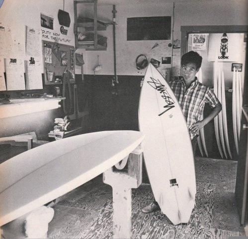
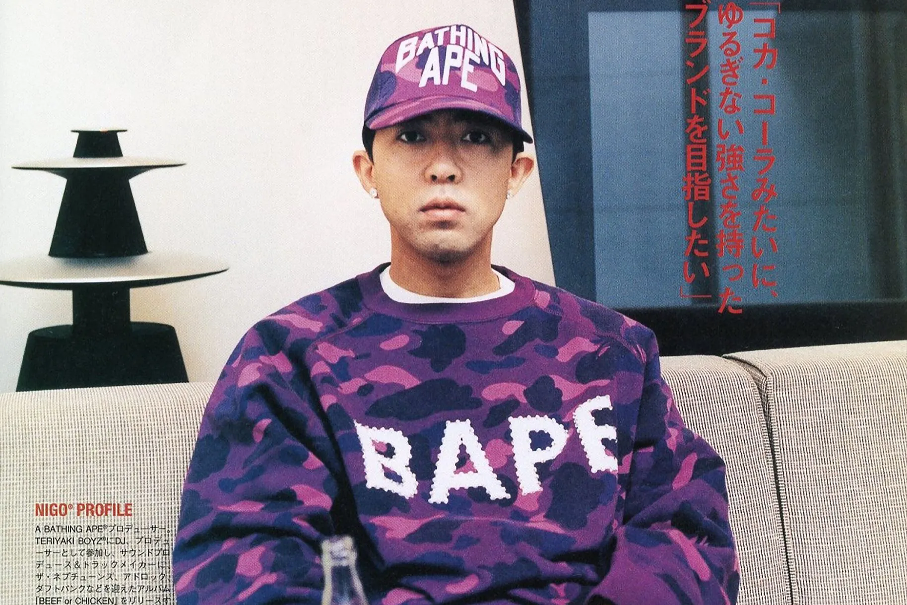
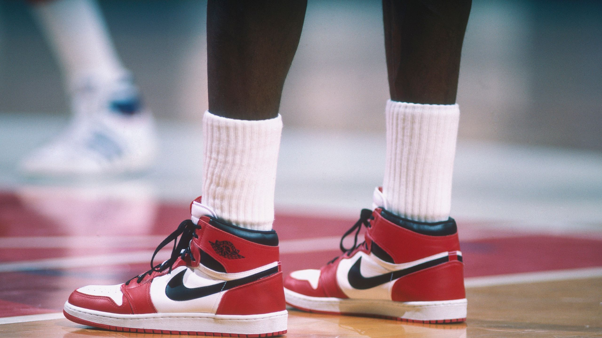
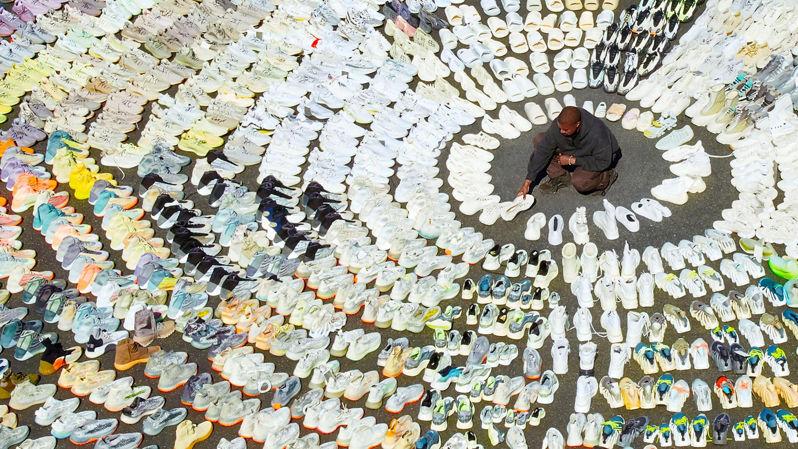

La Historia del Street Wear
La evolución del Streetwear: desde la cultura skate hasta el high fashion
¡Bienvenido! ¡Te invito a leer!
Lo que comenzó como una expresión auténtica de comunidades marginales se convirtió en uno de los movimientos culturales más influyentes del siglo XXI. El streetwear no nació en las pasarelas, sino en las calles: entre patinetas en California, clubes en Tokio y tiendas escondidas en Nueva York. Desde sus primeras manifestaciones ligadas al surf y al skate, hasta su fusión con las casas de moda más prestigiosas del mundo, esta corriente ha sabido adaptarse y reinventarse sin perder su esencia.
En esta serie de artículos, exploramos la evolución del streetwear a través de seis marcas fundamentales: Stüssy, Supreme, BAPE, The Hundreds, Nike y Yeezy. Cada una representa un capítulo distinto en esta historia, aportando su visión única y marcando hitos claves en el camino hacia la globalización y el reconocimiento cultural. Te invitamos a sumergirte en estas historias individuales que, unidas, forman el ADN del streetwear moderno.
A continuación, te comparto algunos artículos interesantes...
Stüssy: El Surf que Conquistó la Moda Urbana
Año de fundación: 1980 (Laguna Beach, California)
Fundador: Shawn Stussy
¡Ver Más!
Fecha de Publicación: 02/06/2025
Supreme: De Skate Shop a Símbolo de Reventa
Año de fundación: 1994 (SoHo, Nueva York)
Fundador: James Jebbia

¡Ver Más!
Fecha de Publicación: 03/06/2025
BAPE: El Colorido Universo de Harajuku
Año de fundación: 1993 (Tokio)
Fundador: Tomoaki “Nigo” Nagao
¡Ver Más!
Fecha de Publicación: 04/06/2025
Nike: Del Swoosh al Streetwear Multiverso
Año de fundación: 1964 (como Blue Ribbon Sports) / 1971 (Nike)
Fundadores: Phil Knight y Bill Bowerman
¡Ver Más!
Fecha de Publicación: 05/06/2025
Yeezy: De Visión Artística a Fenómeno Cultural
Año de lanzamiento de línea propia: 2015 (con Adidas)
Creador: Ye (Kanye West)
¡Ver Más!
Fecha de Publicación: 06/06/2025